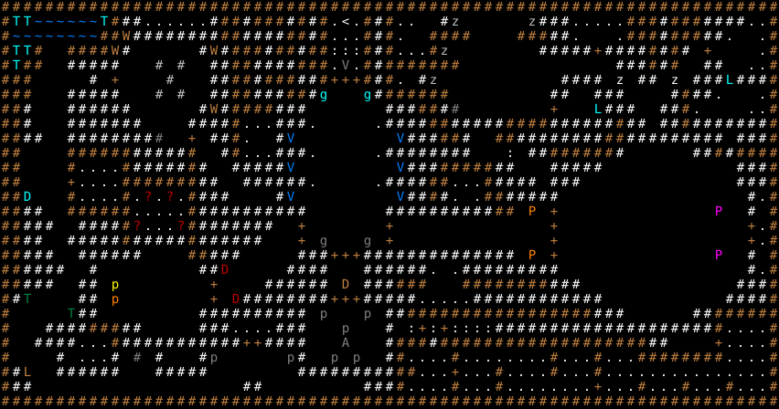

古い城 / The Old Castle
固定クエスト「古い城」の達成条件・報酬・地形・出現モンスター・クエストメッセージ。
Fixed quest "The Old Castle": objective, reward, terrain, monsters and messages.
← クエスト一覧 / All quests · 🏠 ホーム / Home
概要 / Overview
| 項目 | 内容 |
|---|---|
| 受注箇所 | 辺境の町（アウトポスト）（BUILDING_0） |
| 種別 | 全滅 |
| 対象Lv（危険度） | 50 |
| 目標 | エリア内の全モンスターを撃破 |
| 前提クエスト | 33: クローン地獄 |
| 報酬 | ★『クリスドゥリアン』 / 'Crisdurian'／職業別 20種（下記・個別ページに全列挙） |
| フラグ | PRESET / ONCE |
達成条件 / Objective
クエストフロアに出現する 全モンスターを撃破 すると達成。
報酬 / Reward
達成後、依頼建物の前に出現する。職業により異なるため全職業分を列挙（$CLASS 条件つき報酬タイル由来）。
| 対象職業 | 報酬 |
|---|---|
| 鍛冶師 | 万色ドラゴン・スケイルメイル |
| 観光客 | ★プラチナイェンダー印エクスプレスカード / Platinum Yendorian Express Card |
| レンジャー・アーチャー | ★『与一の弓』 / of Yoichi |
| 戦士・狂戦士 | ★『ドラゴンころし』 / 'Dragon slayer' |
| 騎兵 | ★ドン・キホーテの / of Don Quixote |
| 混沌の戦士 | ★『ザルクスラ』 / 'Zarcuthra' |
| 盗賊 | ★バック郷の / of Buckland |
| 修行僧 | ★シヴァの化身の / of Shiva's Avatar |
| 忍者 | ★宵闇の / of The Pitch Dark Night |
| メイジ・ハイ=メイジ・スペルマスター・青魔道師・超能力者 | ★インドラの / of Indra |
| プリースト・練気術師・元素使い | ★パランティアの石 / Palantir of Westernesse |
| 吟遊詩人 | ★竪琴師ロビントンの / of Robinton, the masterharper |
| 鏡使い | ★ヌメノールの / of Numenor |
| 剣術家・魔法戦士 | ★『アグララング』 / 'Aglarang' |
| 赤魔道師 | ★『サンブレード』 / 'Sun Blade' |
| パラディン（領域: Crusade） | ★聖騎士の / of Sacred Knights |
| パラディン（領域: Death） | ★地獄の / of Hell |
| 魔道具術師・魔獣使い | ★帯魔力ペンダント / Charmed Pendant |
| ものまね師 | ★ものまねの始祖ゴゴの / of Gogo |
| スナイパー | ★名射手ウィリアム・テルの / of Wilhelm Tell |
| 上記以外の職業（既定） | ★『クリスドゥリアン』 / 'Crisdurian' |
クエストメッセージ / Messages
依頼時
街の古城が邪悪なモンスターどもに占拠されてしまいました。
強力なアンデッド、邪悪な魔術師、ドラゴン、さらにはタイタンまでもが
中にいると噂されています。城への入口はここの東の広い平地にあります。
中にいる全てのモンスターを倒して下さい。報酬はとても価値のある
アイテムです。
達成（報酬）時
素晴らしい!! お礼を外に置いておきました。
失敗時
この仕事はあなたには難しかったようですね。
出現モンスター / Monsters
地形・マップ / Map
初期位置と固定配置。記号の意味は下の凡例を参照。

ASCIIマップ
XXXXXXXXXXXXXXXXXXXXXXXXXXXXXXXXXXXXXXXXXXXXXXXXXXXXXXXXXXXXXXXXXXXXXXX
XxxWWWWWWxX%sTTTTTT%XX%XXX%X%X,<,X%XTT sM M%%%TThTTXXX%XXX%%%%hTX
XWWWWWWWWXXR%%%%%%%sXX%%%%XX%X,,,X%XT XXXX XXX%%T TXXX%XXX%%T TX
XxxX XXXXR% %R%XXX%XX%XX]]]X%XjThXM %%%%%D%%%%X%X% D TX
XxXX %%%%% w w %%XX%%%%XXX,P,X%XXXXXXX %%%X%X %% hTX
XXX s D w %%XX%XXX%%XDDDX%Xh sM %%%% O %% O %%%C%%%X
XXX %%%%% w w %%XX%%%XX%g g%XXXXXX %% %%% %X%%h TX
XX% %%%%%% %R%XXXX%%% %%%XX%r D I%%% %%Xj TTX
XX% %%%%%%% %%%%XTTT%%%d d%%%%XX%%%s%XXXX%%%%%%X%% %%X%%%s%%%X
XX%% %%%%%%%%r D %%XT sL L%%%XX% XX%%%%%%%%XX%%s%%%%%% %%%X
XX XXXXXX%%%%%X %XTTT%%%d d%%%%%%%% ; %%XXXXXX% %%XsXXXX
XX XqqqqX%%%%%X% %%%%%L L%%%XXXXX%% %%%%% %%%X
XX |,,,QXXXXXXX%% %%%%%%d d%%%%XXThTX%%%% s%% %%%X
XXz XqqqqXpmfmiX%%% sL L%%X%T TXX%%%%% %YX
XX%% XXXXXXcenekX%%%%%%%%%% %%%%%%%s%%XX t D Z % X
XX%%% %%%%XmbBymX%%%%%%% D D D DhX
XX%% %%%%%X%%s%%X%%%%%% D G G D D DhX
XX%%% %%%%%% XX%%% %%%DDD%%%%%%%s%%%%%% t D Z % X
XX%%%% % %%N %%%% %%%%%%T T%%%%%%%%% %YX
XX%%% %% E D %%%%%% K %%%XXX XXXXXXXX%%% %%%X
X%o %% S D N%%%%%%%%DDD%%%%%ThThT%%%%%%%%%%%% %%%%X
X o%% %%%%%%%%%% a a %%XXXXXXXXXXXXXXXXX%%% %%XXXXXX
X %%%%XXX%% %%%ThhT%%% a s ;|;|;;;;%%%%%%%%%%%%%%%%s%%%X,,,5X
X %%%%TTTX%%%%%s%%%%%DD%%%% A %XXXuXXXXXXXXXXXXXXXXXXX%% v,,,,X
X s TTT% r % %H H% a a %X5,,,X,,,,,,,,X5,,X,,,XXXXXXXX,,,,X
X%l %%%%%% %%s%% %%%%s%%%%XX,,,U,,,X,,,,X,,,X,,,,,,,,,,,,,,,X
X%% %% %%%X5,,,X,,,X5,,,,,,,U,,,X5,,X,,,X,,5X
XXXXXXXXXXXXXXXXXXXXXXXXXXXXXXXXXXXXXXXXXXXXXXXXXXXXXXXXXXXXXXXXXXXXXXX
地形の凡例
| 記号 | 表示 | 地形 / 内容 |
|---|---|---|
X |
#（Light Brown） | 永久岩の壁 |
W |
~（Blue） | 深い水 |
% |
#（White） | 花崗岩の壁 |
s |
#（White） | 花崗岩の壁 |
T |
.（White） | 床 |
, |
.（White） | 床 |
< |
<（White） | 上り階段 |
␣ |
.（White） | 床 |
h |
.（White） | 床（ランダムアイテム） |
] |
:（White） | 岩石 |
j |
.（White） | 床（ランダムアイテム） |
D |
+（Light Brown） | ドア |
; |
:（White） | 岩石 |
q |
.（White） | 床（ランダムアイテム） |
| ` | ` | +（Light Brown） |
Q |
.（White） | 床（ランダムアイテム） |
p |
.（White） | 床 ＋ [紋様仙術] |
f |
.（White） | 床 ＋ [運命の切札] |
i |
.（White） | 床 ＋ [カオス魔導] |
Y |
.（White） | 床 ＋ *体力回復* |
c |
.（White） | 床 ＋ [一角獣の書] |
e |
.（White） | 床 ＋ *鑑定* |
n |
.（White） | 床 ＋ [自然の恵み] |
k |
.（White） | 床 ＋ [悪魔の叡知] |
b |
.（White） | 床 ＋ [暗黒魔導] |
B |
.（White） | 床 ＋ [退魔払邪] |
y |
.（White） | 床 ＋ [師範代の書] |
5 |
.（White） | 床 |
u |
#（White） | 花崗岩の壁 |
v |
+（Light Brown） | 鍵のかかったドア |
U |
+（Light Brown） | ドア |
🤖 この解説ページは
tools/generate-wiki.mjsにより生成されています（出典:lib/edit/quests/*.txt,lib/edit/QuestPreferences.txt）。手動で編集しないでください — 変更は次回の再生成で上書きされます。内容の修正は生成スクリプトを編集してください。 生成 / Generated: 2026-07-05 07:41 UTC · hengband5ebae9734b·tools/generate-wiki.mjs